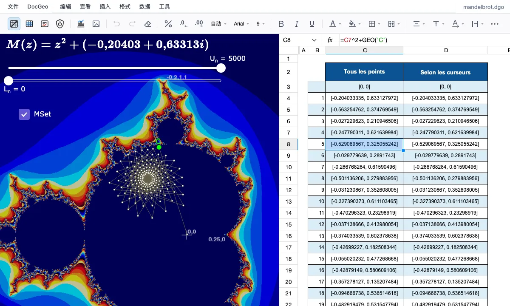

电子表格
DocGeo 的标签页可以包含一张 DocCells 工作表（DocTools 的电子表格）：放在图形旁边，或单独放在自己的标签页中。图形与单元格实时相互读取。

在上面的例子中：
-
单元格 B1 到 B3 读取三角形边 a、b、c
的长度：
=GEO("a")……； - B4 求它们的和：
=B1+B2+B3； - 图形通过
s = !B4这一行读回这个和。
拖动 A、B 或 C 时，单元格和s在移动过程中随之变化。
添加电子表格
| 操作 | 方法 |
|---|---|
| 在图形旁边 | 文件 › 视图 › 新建电子表格视图：在右侧多出一列，含一张空工作表；各列宽度相同（多个视图） |
| 在独立标签页中 | 文件 › 新建电子表格标签页：一个只含一张工作表的标签页，名为“电子表格1”“电子表格2”……（工作簿） |
| 调整大小、移动 | 拖动列之间的分隔线；电子表格视图处于活动状态时，用文件 › 视图 › 视图左移或视图右移 |
| 删除 | 文件 › 视图 › 删除电子表格视图：视图及其单元格消失，图形收回空间。电子表格标签页的删除方式与其他标签页相同。 |
- 一个标签页最多有一个电子表格视图：已有一个时，新建电子表格视图呈灰色。
- 电子表格视图只显示一张工作表，没有工作表标签。要使用多张工作表，就创建多个电子表格标签页，它们可以相互读取（见下文）。
- 添加或删除电子表格视图可以撤销，和其他视图操作一样。
电子表格的菜单和按钮
在单元格中单击或按键，电子表格视图即成为活动视图。DocGeo 的工具栏随即让位给电子表格的工具栏，高度不变：下方没有任何移动。
- 菜单栏保留文件，其后是DocGeo菜单，然后是电子表格的菜单。
- 电子表格的按钮栏（数字格式、字体、粗体、颜色、边框、对齐……）取代 DocGeo 的操作栏。
- DocGeo菜单提供仍然有用的功能：作图历史、工具面板、属性和使用手册。
- 单击图形或“作图”面板、在其中输入一行，或切换标签页，即可回到 DocGeo 的工具栏。在电子表格标签页中，电子表格的工具栏保持不变。
- 电子表格的对话框（条件格式、数字格式……）在关闭之前会为整个 DocGeo 窗口罩上遮罩。
在电子表格标签页中，“作图”面板仍然可用（DocGeo › 作图历史）：在其中输入的对象会被计算但不绘制，该标签页的单元格可以读取它。
DocGeo 嵌入到其他页面（例如 DocTools）时没有菜单栏：电子表格的工具栏保留在其列的顶部。
图形读取单元格
图形中的公式用感叹号加单元格地址来指定本标签页电子表格视图中的单元格：!B3。
| 写法 | 值 |
|---|---|
!B3 |
单元格 B3 |
!B2:B21 |
一行或一列的区域：值的列表 |
!A1:C3 |
矩形区域：行的列表，每行是一个列表 |
电子表格1!B3 |
电子表格标签页中的单元格 B3 |
'图形 1'!!B3 |
另一个标签页电子表格视图中的单元格 B3 |
A = (!B1, !B2)
r = !B3
L = !A1:A10-
地址先写大写字母再写数字（
B3、AA12），不加$，紧跟在感叹号之后。名为 A1 的对象的否定写作!(A1)。 -
数字、文本、布尔值或列表按原样读取；日期读作数字。单元格可以包含用方括号输入的列表
[2, 1]，或计算得到的列表：=[2, 1]*3。空单元格或出错的单元格（#DIV/0!……）给出未定义的值：读取它的对象不绘制。 - 单元格一旦改变（无论是输入还是电子表格的计算），读取它的对象就会重新计算并重绘。
- 引用只是公式的一部分：它不创建任何对象。从单元格读取的点（如上面的 A）是计算出来的：不能用鼠标拖动。要移动它，就修改单元格。
另一个标签页的单元格
先写标签页名称，若含空格或符号则加单引号，与读取另一个标签页相同：电子表格1!B3。如果该标签页还有图形，就把感叹号写两次：'图形 1'!!B3，因为'图形 1'!B3指的是其图形中的对象 B3。其单元格按离开该标签页时的计算结果读取。
单元格读取图形：GEO
在单元格中，函数GEO读取图形中某个对象的值，对象名称写在引号中。
=GEO("c")
=GEO("'图形 1'!c")
=2*GEO("r")+1- 该值就是图形中的公式通过对象名称读取到的值：线段的长度、表达式或滑动条的值、文本、复选框的状态……操作图形时，它随之变化。
-
点读作其坐标的列表：
=GEO("A")给出[1, 2]，可以像列表一样参与计算：=GEO("A")*2。 -
未知或未定义的对象，或既非数字、也非文本、也非布尔值、也非点、也非列表的对象，给出
#N/A。名称必须写在公式中：=GEO(A1)给出#VALUE!。 -
GEO("'图形 1'!c")读取另一个标签页中的对象 c：电子表格标签页就是这样读取图形的。 -
GEO在所有语言中名称相同。它只存在于 DocGeo 中：在单独的 DocCells 中，它给出#N/A。
循环引用
被GEO读取的对象不能依赖于依赖它的单元格。如果A1包含=GEO("m")+1，用m = !A1这一行重新定义 m 会被拒绝：“循环引用：!A1”。
同样，会与图形形成循环的单元格公式会以此消息被取消，单元格恢复之前的内容。若文件中仍含有循环，闭合循环的那次读取为未定义。
撤销与保存
- 单元格有自己的撤销：在单元格中按Ctrl Z，或使用电子表格的菜单。DocGeo 的 按钮不会撤销电子表格中的输入。
-
单元格、公式及其格式与图形一起保存在同一个
.dgo文件中。在单元格中按Ctrl S，或用文件 › 保存，即可全部保存。
面向学生
DocGeo 的阅读器与嵌入网页的图形一样，显示工作表时不带菜单和按钮，但保留公式栏。
- 学生可以像在输入框中一样在单元格中输入：图形随之变化。
- 重置按钮会把单元格恢复为保存时的样子。
- 这些输入不属于嵌入该图形的页面所保存的学生答案：只有图形中的对象才属于。
电子表格是一个独立的应用，只有当显示的标签页含有电子表格时才会加载。在自行托管
DocGeo 副本的网站上，doccells文件夹必须发布在
DocGeo 文件夹旁边；否则电子表格视图显示“⚠
DocCells”，图形的其余部分正常工作。